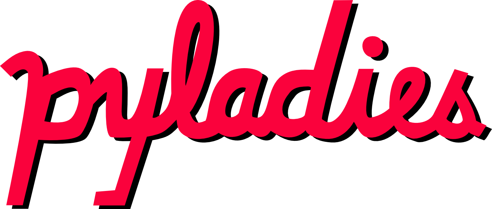

Introdução à Análise de Dados com Python — Aula 01: Apresentação do Python, ambientes e notebooks

Curso de especialização em:
Ciências Sociais de Dados: Aplicações de Métodos Quantitativos à Análise Social e à Avaliação de Políticas Públicas
Módulo: 04 – Introdução à Análise de Dados com Python
Docente: Prof. Dr. Alisson Soares
Aula por: Alisson Soares

Plano da aula
Programação é circular: Para entender A, você precisa entender B; e para entender B, precisa entender C e A…
Parte 1 — O Python e a análise de dados
Linguagens de programação em Ciência de Dados
- SQL, Python, R, Julia, Elixir.
- R e Julia: mais focados em estatística e ciência de dados.
- Python: linguagem de uso geral.
“Desde o seu surgimento em 1991, Python se tornou uma das linguagens de programação interpretadas mais populares, junto com Perl, Ruby e outras.” (McKinney, 2017, p. 24)
Uma breve história
- Criada por Guido van Rossum; versão 0.9.0 publicada em 19 de fevereiro de 1991.
- Identação obrigatória; tipagem dinâmica; prioridade na legibilidade.
- Demorou cerca de 25 anos para “pegar”: era usada para prototipar.
O ponto de virada
- Deep Learning e redes neurais profundas impulsionam o uso (Theano, Caffe, TensorFlow, PyTorch — 2006–2016).
“Em 2014… Python é atualmente a linguagem mais popular para o ensino de disciplinas introdutórias de ciência da computação nos departamentos norte-americanos mais bem classificados. Especificamente, oito dos 10 melhores departamentos de CS (80%), e 27 dos 39 melhores (69%), ensinam Python em disciplinas introdutórias CS0 ou CS1.” (CACM, jul. 2014) “Em 2014… Python is currently the most popular language for teaching introductory computer science courses at top-ranked U.S. departments. Specifically, eight of the top 10 CS departments (80%), and 27 of the top 39 (69%), teach Python in introductory CS0 or CS1 courses.” (CACM, jul. 2014)
- 2023: Microsoft anuncia Python como linguagem nativa dentro do Excel.
Python entre as linguagens mais utilizadas
Por que Python para análise de dados?
“Nos últimos anos, o suporte melhorado de Python para bibliotecas (como o pandas e o scikit-learn) o transformou em uma opção popular para tarefas de análise de dados. Em conjunto com a robustez de Python para uma engenharia de software de propósito geral, é uma excelente opção como uma linguagem principal para a construção de aplicações de dados.” (McKinney, 2017, p. 25)
Python como aglutinador
“Parte do sucesso de Python no processamento científico deve-se à facilidade de integração com códigos em C, C++ e FORTRAN.” (McKinney, 2017, p. 25)
- Bibliotecas legadas em C/FORTRAN (álgebra linear, otimização) acessadas a partir de Python.
Resolvendo o problema de “duas linguagens”
“Em muitas empresas, é comum fazer pesquisas, gerar protótipos e testar novas ideias usando uma linguagem de computação mais especializada, como SAS e R, e então, posteriormente, portar essas ideias para que façam parte de um sistema maior de produção… O que as pessoas percebem cada vez mais é que Python é uma linguagem apropriada não só para pesquisas e prototipagem, mas também para a construção de sistemas de produção. Por que manter dois ambientes de desenvolvimento quando um só seria suficiente?” (McKinney, 2017, p. 26)
Ex.: Quaest
Por que não Python?
“Pelo fato de Python ser uma linguagem de programação interpretada, em geral, a maior parte do código Python executará de forma substancialmente mais lenta do que um código escrito em uma linguagem compilada, como Java ou C++. Como o tempo do programador com frequência é mais valioso do que o tempo de CPU, muitas pessoas ficarão satisfeitas com essa negociação de custo-benefício.” (McKinney, 2017, p. 26)
Comunidades Python no Brasil
Python:
Comunidades Python - PyLadies

Mais grupos de Python no Brasil no link

Grupos Python Br
Eventos
Que tipos de dados em Análise de Dados?
“O foco principal está nos dados estruturados… por exemplo: Dados tabulares ou do tipo planilha… Arrays multidimensionais (matrizes). Várias tabelas de dados inter-relacionadas por colunas de chaves… Séries temporais uniformemente espaçadas ou não.” (McKinney, 2017, p. 23)
Dica
Bases de pesquisas sociais, registros administrativos e dados de políticas públicas são, em geral, dados tabulares — o caso central do curso.
O ecossistema de bibliotecas
Visão geral
| Biblioteca | Para que serve |
|---|---|
| NumPy | Arrays numéricos e computação eficiente |
| pandas | Estruturas de dados tabulares (DataFrame) |
| matplotlib | Visualização (plotagens 2D) |
| IPython / Jupyter | Processamento interativo, notebooks |
| SciPy | Computação científica (integração, otimização…) |
| scikit-learn | Aprendizado de máquina |
| statsmodels | Estatística clássica e econometria |
NumPy
“Além dos recursos de processamento rápido de arrays que a NumPy acrescenta ao Python, um de seus principais usos em análise de dados é como um contêiner para que dados sejam passados entre algoritmos e bibliotecas.” (McKinney, 2017, p. 28)
- Base numérica sobre a qual pandas e outras bibliotecas se apoiam.
Pandas
“O próprio nome pandas é derivado de panel data (dados em painel), um termo de econometria para conjuntos de dados multidimensionais estruturados, e uma brincadeira com a própria expressão Python data analysis.” (McKinney, 2017, p. 30)
- O
DataFramerecebeu o nome do objetodata.framede R (p. 29).
Matplotlib
“A matplotlib… é a biblioteca Python mais popular para fazer plotagens e gerar outras visualizações de dados bidimensionais.” (McKinney, 2017, p. 30)
- Criada por John D. Hunter; hoje mantida por uma grande equipe de desenvolvedores.
- Base das visualizações do pandas; plotly como alternativa interativa.
IPython e Jupyter
“Ele incentiva um fluxo de trabalho de execução-exploração, em vez do fluxo de trabalho típico de edição-compilação-execução de muitas outras linguagens de programação.” (McKinney, 2017, p. 31)
“Em 2014, Fernando e a equipe do IPython anunciaram o projeto Jupyter: uma iniciativa mais ampla para projetar ferramentas de processamento interativas, independentes da linguagem.” (McKinney, 2017, p. 31)
- O notebook do IPython passou a ser o notebook Jupyter (suporte a mais de 40 linguagens).
scikit-learn e statsmodels
- scikit-learn: “o principal kit de ferramentas de propósito geral para aprendizado de máquina dos programadores Python” (McKinney, 2017, p. 33).
- statsmodels: “contém algoritmos para estatística clássica (principalmente frequentista) e econometria” (McKinney, 2017, p. 34) — regressão, ANOVA, séries temporais.
Jargão da análise de dados
“Manipular/manipulação/tratamento (Munge/munging/wrangling): Descreve o processo geral de manipulação de dados não estruturados e/ou desorganizados, convertendo-os em um formato estruturado ou limpo.” (McKinney, 2017, p. 43)
Linguagem interpretada
“O interpretador Python roda um programa executando uma instrução por vez.” (McKinney, 2017, p. 47)
- Sem etapa de compilação separada: escreveu, executou.
- Facilita o fluxo interativo de análise (executar → ver resultado → ajustar).
Python 2 e Python 3
“A primeira versão de interpretadores da linha Python 3.x foi lançada no final de 2008. Ela incluía uma série de mudanças que deixaram alguns códigos anteriormente escritos com Python 2.x incompatíveis.” (McKinney, 2017, p. 38)
- Python 2 ficou sem suporte em jan/2020.
- Hoje: use sempre Python 3.x.
Exemplos de uso de Python
Tanto a coleta, processamento de dados e Visualização foram feitas no Python
Mapa de abstenções nas eleições de 2026 no Brasil:
Apenas para ilustrar: https://tatipara.github.io/eleicao_2026_1turno/mapa_abstencao_interativo07out.html
Documentário
The Story of Python and how it took over the world | Python: The Documentary
Dublado em português
O notebook Jupyter
“Um dos principais componentes do projeto Jupyter é o notebook: um tipo de documento interativo para código, texto (com ou sem marcação), visualizações de dados e outras saídas.” (McKinney, 2017, p. 50)

Jupyter notebook
- O notebook interage com kernels (implementações do protocolo de processamento em várias linguagens).
- Para Python, o kernel utiliza o sistema IPython.
- Início:
jupyter notebookno terminal - JupyterLab
O arquivo .ipynb
“Quando salvar o notebook […] um arquivo com a extensão .ipynb será criado. É um formato de arquivo autocontido, com todo o conteúdo (incluindo qualquer saída de código avaliada) que estiver no notebook no momento.” (McKinney, 2017, p. 51)
notebook
- Código, texto (markdown) e resultados no mesmo arquivo.
- Células executadas com Shift-Enter.
markdown (utilizado no notebook)
Markdown é um tipo de linguagem de marcação (markup), utilizada para formatar texto de forma fácil, leve e rápida.
Exemplo de editor online com sintaxe markdown dillinger Tutorial Básico do markdown
Google Colab
- Notebook Jupyter rodando na nuvem do Google: nada de instalar localmente.
- Células de código e de texto; salvamento automático no Google Drive.
- Compartilhamento e colaboração, como um documento do Google.
- Acesso a recursos de computação (incluindo GPU) — relevante em Machine Learning.
- Execute com Shift-Enter (ou no botão de play).
- Adicione uma célula de texto (markdown) com seu nome e o título da prática.
O que é o Google Colab?
- Colaboratory: ambiente de notebooks Jupyter 100% na nuvem, do Google
- Roda Python no navegador — não precisa instalar nada, só ter uma conta Google
- Gratuito, com acesso a GPU e TPU
- Mistura células de código (Python/shell) e células de texto (Markdown/HTML)
- Compartilhamento e edição em conjunto, como um Google Docs
Links para começar
- Colab — página inicial, com notebooks de exemplo (Welcome, Markdown Guide, Charts, Forms…)
- Cheat sheet para Google Colab — truques para as células de texto (Markdown e HTML)
Por que usar o Colab?
- Zero configuração: abre e já roda
- Bibliotecas já pré-instaladas: pandas, numpy, matplotlib, scikit-learn…
- Integração com Google Drive e GitHub
- Documentação viva: código + texto explicativo no mesmo arquivo
- Bom para aulas, protótipos rápidos e análise de dados em grupo
Como funciona: máquina virtual temporária
- Cada notebook roda em uma máquina virtual (VM) temporária na nuvem
- Após muito tempo parado, o ambiente desconecta (~90 min de inatividade), para economizar recursos
- Sessões também têm duração máxima (≈ 12 h, varia conforme demanda da plataforma)
- Código e texto ficam salvos no notebook (no Drive)…
…mas os arquivos não
Ao desconectar, tudo que estava no disco da VM é apagado. Guarde dados e resultados no Google Drive.
Passo a passo no Colab
- Acesse colab.research.google.com (conta Google) e crie um novo notebook.
- Renomeie: “aula01_teste.ipynb”.
- Na primeira célula de código:
O sistema de arquivos
/contenté a pasta de trabalho da VM
- Arquivos enviados pelo upload (ícone de pasta 📁 à esquerda) caem em
/content - Ao reiniciar o ambiente, essa pasta é esvaziada
- Versões do ambiente (mudam com atualizações — sempre confira):
Células de código e de texto
- Célula de código: executa Python (ou shell, com truques que veremos a seguir) com Shift+Enter
- Célula de texto: documenta o notebook com Markdown (ou tags HTML)
- Alterne entre elas no menu, nos ícones da célula ou pelos atalhos
Ctrl+M MeCtrl+M Y - Texto e código vivem juntos: é isso que faz o notebook ser um relatório executável
Comandos Linux no Colab
- No Colab não há terminal tradicional: comande o shell com
!no início da linha
!ls,!pwd,!cat,!wget,!curl,uname -r,--version,--help…- Dica: a saída pode ser capturada em Python —
arquivos = !lsguarda uma lista
!cd não muda a pasta
Cada comando ! roda em um subprocesso que é encerrado logo após. Para mudar de diretório permanentemente, use a magia %cd /caminho/da/pasta.
Magias (% e %%)
%(magia de linha): afeta o próprio notebook, não um subprocesso%cd /caminho/da/pasta— muda o diretório de verdade%time— mede o tempo de um comando
%%(magia de célula): vale para a célula inteira, linha inicial
- Outras úteis:
%%time(tempo da célula),%%capture(oculta a saída)
Instalação de pacotes e ambiente
pip install: bibliotecas Python —!pip install nome_da_biblioteca- A instalação é temporária: se perde ao reiniciar o ambiente
- Versão fixa:
!pip install pandas==2.2.2
apt-get install: pacotes do sistema (não-Python) —!sudo apt-get install -y ffmpegwget/curl: baixam arquivos da internet —!wget https://site.com/arquivo.zipgdown: baixa arquivos do Google Drive por link compartilhável
Por que reinstallar?
A VM é descartável: a cada sessão o ambiente volta ao estado original. Guarde a lista de pacotes (ex.: um bloco !pip install -r requirements.txt) para recriá-la rápido.
Montar o Google Drive
- Fluxo mais importante para não perder dados, pois o ambiente é resetado
- Use Python, não shell:
- Autorize o acesso com sua conta Google
- Arquivos do Drive ficam acessíveis em
/content/drive/MyDrive/
Outras formas de carregar dados
- Upload manual: ícone de pasta 📁 → vai para
/content(temporário!) - URL direta:
!wget/!curl, ou direto no pandas —pd.read_csv("https://...") - Google Drive: comando
gdownou via Drive montado - Google Sheets: notebook “External data: Drive, Sheets and Cloud Storage” (na página inicial do Colab)
Células de texto: Markdown no Colab
Do cheat sheet — o Colab também aceita tags HTML (<b>, <i>, <table>, <br>, <hr>…) nas células de texto:
| Para… | Markdown |
|---|---|
| Títulos (1 a 6) | # ## … ###### |
| Negrito / itálico | **texto** / *texto* |
| Riscado | ~~texto~~ |
| Lista numerada / itens | 1. / * |
| Link | [texto](url) |
| Imagem (com alt) |  |
| Código inline | `código` |
| Citação / recuo | > texto |
| Régua horizontal | --- |
| Fórmula matemática | $x^2$ ou $$\sum_{i=1}^n x_i$$ |
Fórmulas matemáticas (LaTeX)
- O Colab renderiza LaTeX dentro de células de texto
\[y = \beta_0 + \beta_1 x + \varepsilon\]
- Útil em pesquisa: estatística, equações, símbolos (\(\alpha\), \(\beta\), \(\mu\)…)
Atalhos de teclado
| Atalho | Ação |
|---|---|
Ctrl+Enter |
executa a célula |
Shift+Enter |
executa e vai para a próxima |
Ctrl+M B / Ctrl+M A |
nova célula abaixo / acima |
Ctrl+M D |
apaga a célula |
Ctrl+M Y / Ctrl+M M |
converte em código / texto |
Ctrl+S |
salva o notebook |
Lista completa
Ctrl+M H abre a lista de todos os atalhos (também no menu Ferramentas → Atalhos de teclado).
Hardware: GPU e TPU
- Menu Ambiente de execução → Alterar o tipo de ambiente de execução → GPU/TPU
- Uso gratuito com limites (horas por dia, conforme disponibilidade)
- Útil para machine learning pesado; desnecessário para a maioria das análises
- Conferir a GPU:
Colab, GitHub e compartilhamento
- O Colab abre notebooks direto do GitHub: Arquivo → Abrir notebook → GitHub (ou cole a URL do
.ipynb) - Para editar notebook de outra pessoa: Arquivo → Salvar uma cópia no Drive
- Compartilhar: botão no canto superior direito (como no Google Docs) — leitor, comentarista ou editor
- Baixar para o computador: Arquivo → Fazer download (.ipynb)
Para lembrar
- O ambiente é temporário → salve dados e resultados no Drive
!executa shell;%muda o notebook (%cd);%%bashe%%writefileagem na célula!pip installprecisa ser refeito a cada sessão- Texto em Markdown (veja o cheat sheet), código em Python
- GPU/TPU no menu Ambiente de execução — só quando precisar
uv
Referências
- McKINNEY, Wes. Python para Análise de Dados: Tratamento de dados com Pandas, NumPy e IPython. São Paulo: O’Reilly/Novatec, 2017. Caps. 1 e 2 (seções 2.1–2.2).
- The Story of Python and how it took over the world | Python: The Documentary. 2025. Disponível em: https://www.youtube.com/watch?v=GfH4QL4VqJ0
- Guenther, R. (2014). Python Is Now the Most Popular Introductory Teaching Language at Top U.S. Universities. CACM. https://cacm.acm.org/blogs/blog-cacm/176450-python-is-now-the-most-popular-introductory-teaching-language-at-top-u-s-universities/fulltext
- Documentação: https://docs.python.org/pt-br/3/ ; https://colab.research.google.com

Fundaj - Ciência Social de Dados - Mod 04 Introdução à Análise de Dados com Python